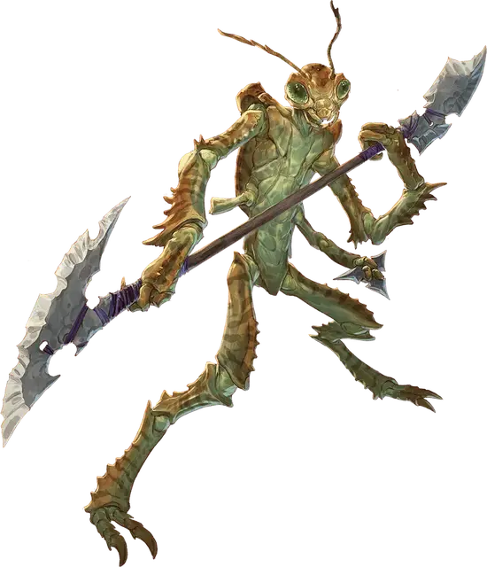

Три-крин гладиатор
Thri-kreen Gladiator
Средний Монстр, любое мировоззрение

Класс Доспеха 17 (природный доспех)
Хиты 142 (19к8 + 57)
Скорость 30 футов
| мод | спас | ||
|---|---|---|---|
| СИЛ | 18 | +4 | +7 |
| ЛОВ | 18 | +4 | +7 |
| ТЕЛ | 16 | +3 | +3 |
| мод | спас | ||
|---|---|---|---|
| ИНТ | 10 | +0 | +0 |
| МДР | 15 | +2 | +5 |
| ХАР | 11 | +0 | +0 |
Навыки Акробатика +7, Атлетика +7, Восприятие +5
Иммунитет к состояниям испуг
Чувства тёмное зрение 60 футов, пассивное Восприятие 15
Языки Три-кринский, Телепатия 60 фт.
Опасность 7 (2900 опыта)
Бонус мастерства +3
Действия
Мультиатака. Три-крин совершает две атаки Гиткой и одну атаку Чаткчей.
Гитка. . Рукопашная атака оружием: +7 к попаданию (с преимуществом если три-крин с неполными хитами), досягаемость 5 фт., одна цель. Попадание: 13 (2к8 + 4) рубящего урона.
Чаткча. . Дальнобойная атака оружием: +7 к попаданию (с преимуществом если три-крин с неполными хитами), дистанция 30/120 фт., одна цель. Попадание: 7 (1к6 + 4) рубящего урона.
Бонусные действия
Прыжок. Три-крин прыгает на расстояние до 20 футов в любом направлении, если его скорость не равна 0.
Реакции
Парирование. Три-крин добавляет 3 к КД против одной рукопашной атаки, которая должна попасть по нему. Для этого он должен видеть атакующего, и должен использовать рукопашное оружие.
Описание
Три-крины гладиаторы с удовольствием используют возможность проверить свои силы в бою и часто покрывают свои панцири кровью врагов.
Три-крин
Три-крины — хищники с насекомоядными чертами и двумя парами рук. Поскольку их тела покрыты защитным хитином, они предпочитают обходиться без доспехов. Хотя три-кринам не нужен сон, им требуются периоды бездействия, чтобы восстановить силы.
В их языке нет слов в обычном понимании. Для выражения эмоций и реакций три-крины клацают своими мандибулами и размахивают антеннами, показывая другим, что они думают и чувствуют. Другим существам трудно интерпретировать этот способ общения и невозможно воспроизвести. Для взаимодействия с существами других разумных видов три-крины используют телепатию.
Они часто используют оружие собственной конструкции, особенно гитку (двуручное древковое оружие с лезвием на каждом конце) и легкое метательное оружие под названием чаткча (плоский треугольный клин с тремя зазубренными лезвиями). Как правило древко гитки сделано из кости, а лезвия из обсидиана. Чаткча изготавливается из заточенной кости или кристалла.